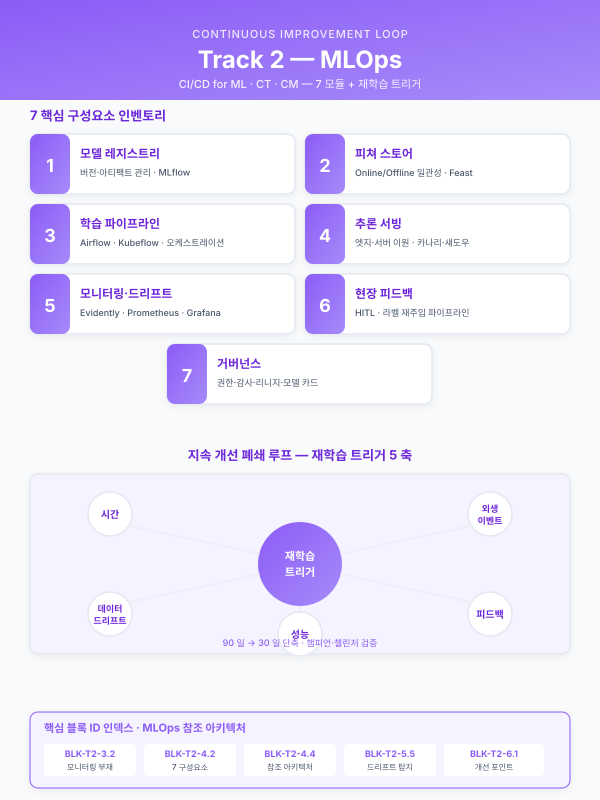

Track 2 — MLOps 구축 및 지속적 개선 공통 본문 목차¤
📖 약 29 분 읽기

이 페이지 둘러보기
본 페이지는 약 585 줄 / H2 섹션 6 개 입니다. 우측 목차 (TOC) 를 활용하여 원하는 섹션으로 빠르게 이동할 수 있습니다.
서문¤
본 문서는 철강·금속가공을 중심으로 한 부산·경남권 제조업체(화승, YCP특수강, 코리녹스, 코렌스, 대한제강, 한국철강 등)를 고객으로 하는 제조 AI 관련 정부지원 사업계획서 · 사업신청서 · 수행계획서 · 연구개발계획서 작성 시, MLOps 구축 및 지속적 개선(Track 2) 에 반복적으로 투입되는 내용을 모듈 단위로 재사용 할 수 있도록 설계한 공통 목차이다. Track 1 의 AI 엔진(5.2-a~f)이 현장에 배포된 이후에도 공정 조건·원재료 공급사·계절·신규 결함 유형의 변화에 따라 성능이 필연적으로 저하된다는 전제에서 출발하며, "모델은 배포 순간이 아니라 운영 첫날" 이라는 관점으로 배포·감시·재학습·거버넌스 전 주기를 사업계획서에 녹여낼 수 있는 블록 모음을 제공한다.
본 목차는 Track 1 과 동일한 카드 포맷(목적 / 포함 내용 / 삽화·도식 후보 / 고객사별 가변 여부)을 유지하여 작성자가 세 트랙을 오갈 때 인지 부하를 최소화하도록 구성하였다. 각 소섹션 카드 말미에는 [관련 시나리오: SCN-XXX, ...] 형태로 시나리오 카탈로그와의 매핑을 명시하며, 특히 SCN-MLO-01/02/03 (MLOps 공통 3종) 은 본 문서 전반에 반복적으로 등장한다. Track 1 본문에서 4.6(엔드투엔드 파이프라인), 5.3(HITL), 6.3(KPI), 7.1(MLOps 교량) 지점에서 본 문서를 호출하며, Track 3 RAG 는 모니터링 이벤트 조회·장애 사유 검색 지점에서 역참조된다.
플레이스홀더 범례 —
[고객사]고객사명,[공정]대상 공정명,[수치]수치,[기간]기간,[%]비율. 특정 고객사 전용 문구는 공통 자산과 분리되며, 본 문서는 고정 공통 블록 기준으로 작성됨. 오픈소스·제품명(MLflow, Feast, Evidently, Kubeflow, Airflow, Seldon, BentoML, Prometheus, Grafana, Fiddler, Arize 등)은 실명 그대로 사용한다.
목차 전체 구조¤
1. MLOps 도입 필요성 및 거시 환경
1.1 "모델 배포 이후" 의 리스크 — AI 프로젝트 실패 유형
1.2 제조 현장 MLOps 의 특수성 (OT·폐쇄망·엣지 · 설비 수명)
1.3 규제·인증·감사 요구 (ISO/IEC 42001, ISO 9001, IATF 16949, 중대재해법)
1.4 본 사업에서 MLOps 가 차지하는 위상과 범위
2. 대상 모델·운영 환경 분석
2.1 운영 대상 AI 엔진 인벤토리 (Track 1 엔진 패턴 매핑)
2.2 배포 지형 — 엣지·온프레미스·하이브리드 클라우드
2.3 추론 트래픽·지연 요구 (SLA/SLO 설계 입력)
2.4 보유 MLOps 성숙도 진단 (Lv.0~Lv.3)
3. AS-IS — 모델 운영의 구조적 공백
3.1 수작업 배포·버전 혼선 및 "마지막에 학습시킨 사람" 의존
3.2 모니터링 부재 — 성능 저하를 불량 발생 후 인지
3.3 재학습 트리거·기준 부재로 인한 방치 및 과잉 재학습 양극단
3.4 피드백 단절 — 현장 확인값이 학습 데이터로 환류되지 않음
3.5 권한·리니지·감사 공백 (외부 심사·규제 대응 취약)
4. TO-BE — MLOps 아키텍처 및 핵심 구성요소
4.1 MLOps 개념 프레임 (CI/CD for ML · CT · CM)
4.2 핵심 구성요소 7종 — 레지스트리·피쳐 스토어·파이프라인·서빙·모니터링·피드백·거버넌스
4.3 오픈소스·상용 도구 스택 선정 기준 및 후보군
4.4 전체 참조 아키텍처 다이어그램 (엣지 ↔ 중앙 ↔ 클라우드)
4.5 보안·네트워크 설계 (OT/IT 경계, 폐쇄망 모델 배포)
5. 구축 상세 — 배포·모니터링·재학습·거버넌스
5.1 모델 레지스트리·버전·아티팩트 관리 (MLflow 등)
5.2 피쳐 스토어 구축 및 Online/Offline 일관성 (Feast 등)
5.3 학습·재학습 파이프라인 및 오케스트레이션 (Airflow·Kubeflow·MLflow Pipelines)
5.4 추론 서빙 아키텍처 (엣지·서버 이원, 카나리·섀도우 배포)
5.5 모니터링 · 드리프트 탐지 · 경보 (Evidently·Fiddler·Prometheus·Grafana)
5.6 거버넌스 — 권한·감사·리니지·모델 카드
6. 지속 개선 루프 및 피드백 체계
6.1 개선 포인트 선정 노하우 (어디를 먼저 고칠 것인가)
6.2 재학습 트리거 설계 (시간·드리프트·성능·피드백·외생 이벤트 5대 축)
6.3 챔피언·챌린저 및 카나리·A/B 검증 프로토콜
6.4 현장 피드백 UI 및 라벨 재주입 파이프라인
6.5 개선 사이클 가시화 (월간·분기 성능 리뷰 리츄얼)
7. 기대효과 · KPI · 사업 연계
7.1 정량적 기대효과 (모델 수명·MTTR·재학습 리드타임)
7.2 KPI 정의 및 대시보드 설계
7.3 Track 1·3 과의 연계 지점 및 향후 로드맵
각 소섹션 카드¤
1.1 "모델 배포 이후" 의 리스크 — AI 제조 프로젝트 실패 유형¤
- 목적: 심사자에게 "MLOps 는 옵션이 아니라 필수" 임을 설득하는 도입 문단을 제공한다. 배포형 AI 파일럿의 전형적 실패 유형을 제시하여 본 사업의 Track 2 편성을 정당화한다.
- 포함 내용:
- 일반 통계(글로벌 AI 프로젝트 상용화 실패율, 파일럿→운영 전환율) 을 **거시 데이터 형태로 인용 가능한 일반 문장**으로 서술 (구체 수치 출처 필요 시 PDF 검증 후 삽입).
- 대표 실패 유형 5가지: 성능 드리프트 방치, 데이터 파이프라인 단절, 피드백 없는 모델 경직, 버전 혼선으로 인한 롤백 불가, 거버넌스 부재로 인한 내부 감사 탈락.
- 본 사업이 이들 리스크를 어느 단계에서 차단하는지의 맵(표지용 요약 표).
- 삽화·도식 후보: AI 프로젝트 Lifecycle 상 "실패 지점" 하이라이트 다이어그램, 실패 유형 × 대응 모듈 매트릭스.
- 고객사별 가변 여부: 공통 고정. 전 고객사·전 사업 동일 사용.
- [관련 시나리오: SCN-MLO-01, SCN-MLO-03]
1.2 제조 현장 MLOps 의 특수성 (OT·폐쇄망·엣지 · 설비 수명)¤
- 목적: 일반 IT/SaaS 영역의 MLOps 와 제조 현장 MLOps 가 왜 다른지를 명확히 하여, 본 사업의 기술적 난이도·차별성을 확보한다.
- 포함 내용:
- OT 네트워크 폐쇄성(공장 내 PLC·DCS · 외부 인터넷 차단) 환경에서의 모델 배포 제약.
- 엣지 디바이스 자원 한계(CPU·GPU·메모리)와 경량화·양자화 요구.
- 설비 수명(10~30년) 과 AI 모델 수명(수개월~수년) 의 시간 스케일 차이.
- 실시간성 요구(추론 지연 < 100 ms) 가 흔하며 클라우드 왕복이 불가한 시나리오 다수.
- IT/OT 경계(purdue model) 를 가로지르는 데이터·모델 흐름 설계 필요.
- 삽화·도식 후보: 일반 MLOps vs 제조 MLOps 비교 표, Purdue 모델 레벨 0~5 와 MLOps 구성요소의 매핑 다이어그램.
- 고객사별 가변 여부: 공통 고정. 고객사 네트워크 구성에 따라 경계 레이어만 일부 교체.
- [관련 시나리오: SCN-MLO-01, SCN-MLO-02, SCN-UTL-06]
1.3 규제·인증·감사 요구 (ISO/IEC 42001, ISO 9001, IATF 16949, 중대재해법)¤
- 목적: MLOps 가 단순 기술 편의가 아니라 인증·감사·법규 대응 수단 임을 보인다. 심사 가점 및 대기업 공급망 편입 요구에 맞춘 논리.
- 포함 내용:
- ISO/IEC 42001(AI 경영시스템) · ISO/IEC 23894(AI 리스크) 등 국제 AI 거버넌스 표준의 요구 항목.
- 자동차 부품사의 IATF 16949 변경관리(Change Management) · 추적성 요구와 모델 버전·리니지 관리의 대응.
- 중대재해처벌법 하 안전 관련 AI(예: SCN-SAF-01) 의 판정 근거 보존 의무.
- 대기업(철강·자동차·전자 업종 원청) 공급망 편입 시 요구되는 AI 품질관리 조항(모델 카드·데이터 시트 제출).
- 삽화·도식 후보: 규제 요구 항목 ↔ MLOps 구성요소 매핑 표, 모델 카드 샘플 1페이지.
- 고객사별 가변 여부: 업종별 교체 — 자동차 부품(IATF), 조선·항공(AS9100), 의료(ISO 13485).
- [관련 시나리오: SCN-MLO-02, SCN-SAF-01, SCN-SAF-02, SCN-SAF-03]
1.4 본 사업에서 MLOps 가 차지하는 위상과 범위¤
- 목적: Track 2 가 Track 1 부속물이 아니라 대등한 본 사업 축 임을 명시. 일부 지원사업(전사적 DX, 클라우드 종합)에서는 Track 2 가 본문이 되기도 한다.
- 포함 내용:
- 본 사업 내 MLOps 범위(구축 신규 / 기존 확장 / 운영 체계만 설계 등 3가지 모드 중 선택).
- Track 1 과의 역할 분담: Track 1 은 "무엇을 배포하는가", Track 2 는 "어떻게 살아 있게 하는가".
- 예산·인력 배분 가이드 (일반적으로 전체 AI 예산의 [%]를 MLOps 에 배분하는 근거).
- 삽화·도식 후보: 본 사업 과제 범위 블록도(Track 1·2·3 비중 시각화).
- 고객사별 가변 여부: 사업별 교체(동일 고객사라도 지원사업별로 범위·비중 다름).
- [관련 시나리오: SCN-MLO-01, SCN-MLO-02, SCN-MLO-03]
2.1 운영 대상 AI 엔진 인벤토리 (Track 1 엔진 패턴 매핑)¤
- 목적: Track 2 가 어떤 엔진들을 운영 대상으로 삼는지 명시적으로 연결. Track 1
5.2-a~f변형 카드와 1:1 매핑된다. - 포함 내용:
- 엔진 인벤토리 표: 엔진명 / 기반 카드(5.2-a~f) / 대상 시나리오 / 배포 위치(엣지·서버) / 재학습 주기 / 성능 KPI / 담당 팀.
- 엔진별 운영 프로파일 차이(예: 비전 엔진은 월 단위 재학습, 시계열 품질 예측은 주 단위, RAG 는 문서 업데이트 시점).
- 신규 엔진 추가 시 인벤토리 갱신 프로세스.
- 삽화·도식 후보: 엔진 인벤토리 매트릭스 표, 엔진별 운영 주기 타임라인.
- 고객사별 가변 여부: 사업·시나리오별 전면 교체. 표 골격은 공통.
- [관련 시나리오: SCN-MLO-01, SCN-MLO-02, SCN-STL-01, SCN-STL-03, SCN-STL-05, SCN-STL-09, SCN-STL-10, SCN-MET-01, SCN-MET-02, SCN-RUB-01, SCN-LLM-01, SCN-LLM-02 — 즉 운영 대상 전 엔진]
2.2 배포 지형 — 엣지·온프레미스·하이브리드 클라우드¤
- 목적: 모델이 물리적으로 어디서 실행되는지를 명시하고, 이에 따른 MLOps 구성 분기를 설정한다.
- 포함 내용:
- 엣지(설비 옆 산업용 PC·GPU 박스): 실시간 제어·비전 검사 시나리오.
- 온프레미스 서버(공장 내 데이터센터): 공정 최적화·대규모 모델·RAG 벡터스토어.
- 클라우드(KT·NHN·AWS 등 국내 리전 선호): 개발·실험·비정형 대용량 학습, 일부 비실시간 추론.
- 하이브리드 구성 원칙: 학습은 클라우드, 추론은 엣지·온프레미스 기본 유지.
- 국내 클라우드·보안 인증(CSAP) 요구 대응.
- 삽화·도식 후보: 3단 배포 지형 다이어그램(Edge / On-prem / Cloud), 시나리오별 배포 위치 매핑 표.
- 고객사별 가변 여부: 고객사별 교체 — 대기업은 3단 모두, 중견은 2단(온프렘·엣지), 중소는 클라우드 비중 확대.
- [관련 시나리오: SCN-MLO-02, SCN-UTL-06, SCN-STL-10, SCN-LLM-01]
2.3 추론 트래픽·지연 요구 (SLA/SLO 설계 입력)¤
- 목적: 모니터링·서빙 설계의 전제가 되는 성능 요구를 수치로 확정.
- 포함 내용:
- 시나리오별 추론 TPS, 지연 요구(p50·p95·p99), 가용성 목표(99.0~99.9%).
- 실시간·준실시간·배치 3구분 및 대표 예(제어 루프 < 100 ms / HMI 경보 < 1 s / RAG 질의 < 5 s / 리포트 생성 비동기).
- 지연 초과 시 fallback 정책(직전 추론 값 유지 / 룰기반 대체 / 수동 모드).
- 삽화·도식 후보: 시나리오별 SLA/SLO 카드 세트, 추론 지연 히스토그램 예시.
- 고객사별 가변 여부: 공통 SLA 템플릿 + 시나리오별 수치 교체.
- [관련 시나리오: SCN-MLO-01, SCN-STL-03, SCN-STL-05, SCN-STL-10, SCN-MET-02, SCN-RUB-04]
2.4 보유 MLOps 성숙도 진단 (Lv.0~Lv.3)¤
- 목적: Track 1 의 스마트공장 수준 진단과 쌍을 이루는 MLOps 수준 진단. AS-IS 를 객관화해 심사자에게 근거를 제공한다.
- 포함 내용:
- Lv.0 수동(노트북 학습·수동 배포 · 모니터링 없음) / Lv.1 재현 가능(코드·데이터 버전 관리) / Lv.2 자동화(CI/CD for ML · 파이프라인) / Lv.3 지속학습(자동 재학습 · 거버넌스) 정의.
- 진단 체크리스트(레지스트리 유무, 파이프라인 자동화율, 모니터링 범위 등 15~20 항목).
- 현재 수준 → 본 사업 완료 시 목표 수준 명시(예: Lv.0 → Lv.2).
- 삽화·도식 후보: 4단계 성숙도 계단 다이어그램, 체크리스트 점수 레이더 차트.
- 고객사별 가변 여부: 고객사별 진단 결과 교체. 척도·체크리스트는 공통.
- [관련 시나리오: SCN-MLO-01, SCN-MLO-02, SCN-MLO-03]
3.1 수작업 배포·버전 혼선 및 "마지막에 학습시킨 사람" 의존¤
- 목적: AS-IS 첫 번째 공백 — 배포가 속인화(屬人化)되어 있다는 점을 지적.
- 포함 내용:
- 모델 파일을 이메일·USB·공유 드라이브로 전달, 버전 표기
_final_v3_진짜최종의 전형적 혼란. - 학습 코드·데이터·하이퍼파라미터 조합이 문서화되지 않아 재현 불가.
- 담당자 퇴직 시 기존 모델 재학습 자체가 불가능해지는 리스크.
- 롤백 메커니즘 부재로 장애 발생 시 즉각 복구 불가.
- 삽화·도식 후보: "USB 배포" 풍자 컨셉 이미지, 재현 가능성 결여 체크 표.
- 고객사별 가변 여부: 공통 고정. 수치·담당자 호칭만 교체.
- [관련 시나리오: SCN-MLO-02]
3.2 모니터링 부재 — 성능 저하를 불량 발생 후 인지¤
- 목적: 두 번째 공백 — 드리프트를 사전에 감지할 체계가 없다는 점.
- 포함 내용:
- 입력 피쳐 분포·예측 분포·성능 지표(정확도·MAE·리콜) 의 지속 추적 부재.
- 원재료 공급사 교체, 계절 변화, 설비 노후화 등 외생 변화가 모델 입력에 투영되나 감지 채널 없음.
- 결과적으로 현장 불량·재작업·클레임으로 비로소 모델 저하를 인지하는 후행적 운영.
- 사고 후 원인 분석 시에도 당시 추론 로그·피쳐 값이 보존되지 않아 규명 실패.
- 삽화·도식 후보: AS-IS 타임라인(드리프트 → 불량 → 인지 → 대응, 각 단계 소요 [기간] 강조), 결여된 모니터링 항목 체크 표.
- 고객사별 가변 여부: 공통 고정. 공정 예시만 교체.
- [관련 시나리오: SCN-MLO-01, SCN-STL-01, SCN-STL-05, SCN-RUB-01]
3.3 재학습 트리거·기준 부재로 인한 방치 및 과잉 재학습 양극단¤
- 목적: 세 번째 공백 — "언제 재학습할 것인가" 판단 기준의 부재.
- 포함 내용:
- 방치형: 초기 배포 모델을 수개월~수년간 그대로 운영.
- 과잉형: 담당자 불안감에 따라 매일·매주 무의미한 재학습 반복, 자원 낭비 + 모델 혼선.
- 기준이 없어 재학습 시점이 "담당자 감" 에 의존, 감사 시 설명 불가.
- 재학습 결과의 검증 없이 교체되어 성능 저하를 촉발하는 사례.
- 삽화·도식 후보: 방치 vs 과잉 vs 최적 재학습의 성능 추이 비교 차트, 트리거 조건 부재의 의사결정 흐름도.
- 고객사별 가변 여부: 공통 고정.
- [관련 시나리오: SCN-MLO-01, SCN-MLO-03]
3.4 피드백 단절 — 현장 확인값이 학습 데이터로 환류되지 않음¤
- 목적: 네 번째 공백 — 현장 작업자의 "맞음/틀림" 확인값이 학습 루프로 돌아오지 않는 구조.
- 포함 내용:
- AI 경보·추천에 대한 현장 승인·기각 이력이 종이·엑셀로만 남거나 유실.
- 현장 정정 라벨이 학습 데이터로 편입되지 않아 모델이 같은 실수를 반복.
- 작업자는 "AI 가 나아지는지 모르겠다" 며 신뢰 저하, 장기적으로 HITL 루프 자체가 사문화.
- 피드백 UI 부재 · 피드백 데이터 스키마 미정의가 근본 원인.
- 삽화·도식 후보: 피드백 단절 다이어그램(모델 → 현장 → 단절), 현장 승인·기각 이력이 환류 시 얻는 개선 곡선.
- 고객사별 가변 여부: 공통 고정.
- [관련 시나리오: SCN-MLO-03, Track 1 5.3 HITL 과 직결]
3.5 권한·리니지·감사 공백 (외부 심사·규제 대응 취약)¤
- 목적: 다섯 번째 공백 — 거버넌스 부재가 외부 감사·규제·공급망 편입을 저해.
- 포함 내용:
- 누가·언제·무엇을 학습·배포·변경했는지의 감사 로그 부재.
- 모델이 어떤 데이터(원본·파생)를 학습했는지 리니지 추적 불가 → 개인정보·영업비밀 혼입 시 범위 특정 불가.
- 접근 권한이 팀 공용 계정으로 관리되어 사고 시 책임 소재 불명.
- IATF 16949·ISO 9001·대기업 공급망 AI 점검 항목에서 반복 지적되는 공백.
- 삽화·도식 후보: 리니지·감사 공백 체크리스트, 요구 항목 vs 현재 상태 갭 표.
- 고객사별 가변 여부: 공통 고정. 규제·인증 목록만 업종별 교체.
- [관련 시나리오: SCN-MLO-02, SCN-SAF-01, SCN-SAF-03]
4.1 MLOps 개념 프레임 (CI/CD for ML · CT · CM)¤
- 목적: Track 2 TO-BE 의 핵심 개념을 정의. 심사자 중 IT 배경자가 아닌 경우에도 이해 가능한 수준의 프레임 제시.
- 포함 내용:
- 전통 CI/CD 와 ML CI/CD 의 차이: 코드 외에 데이터·모델 이 함께 변경·배포 대상.
- CT(Continuous Training): 새 데이터·드리프트에 대응해 모델을 지속 재학습.
- CM(Continuous Monitoring): 성능·입력 분포·인프라 3축 상시 감시.
- Google MLOps Maturity Model, MLOps Level 0/½ 에 대응되는 본 사업 위치.
- 삽화·도식 후보: CI/CD ↔ CI/CD4ML ↔ CT ↔ CM 4층 개념도, MLOps Level 0→1→2 진화 다이어그램.
- 고객사별 가변 여부: 공통 고정. 전 사업 동일 사용.
- [관련 시나리오: SCN-MLO-01, SCN-MLO-02]
4.2 핵심 구성요소 7종 — 레지스트리·피쳐 스토어·파이프라인·서빙·모니터링·피드백·거버넌스¤
- 목적: Track 2 의 모듈 인벤토리 를 한 장으로 제시. 고객사·사업별 필요 모듈만 선택·조합 가능하도록.
- 포함 내용:
- ① 모델 레지스트리(버전·아티팩트·모델 카드)
- ② 피쳐 스토어(Online/Offline, 피쳐 정의 재사용)
- ③ 학습·재학습 파이프라인(오케스트레이션)
- ④ 추론 서빙(엣지·서버·카나리)
- ⑤ 모니터링·드리프트 탐지·경보
- ⑥ 피드백 루프(현장 UI → 라벨 DB)
- ⑦ 거버넌스(권한·감사·리니지)
- 각 구성요소의 입출력·책임 범위·소유 팀 표.
- 삽화·도식 후보: 7모듈 원형 배치 아키텍처 도식(중앙: 모델 레지스트리), 모듈별 책임 RACI 표.
- 고객사별 가변 여부: 공통 고정. Track 2 전체의 중심 다이어그램으로 재사용.
- [관련 시나리오: SCN-MLO-01, SCN-MLO-02, SCN-MLO-03]
4.3 오픈소스·상용 도구 스택 선정 기준 및 후보군¤
- 목적: 구체 도구 선정을 근거 있는 선택 으로 제시하여 심사자 가점을 확보.
- 포함 내용:
- 선정 기준: 라이선스(상업 사용 가능성), 커뮤니티 활성도, 국내 사례, 온프레미스·폐쇄망 배포 가능성, 한글 지원, 보안 인증, 운영 인력 수급성.
- 후보 스택 예시:
- 레지스트리·실험 추적: MLflow, Weights & Biases, Neptune.
- 피쳐 스토어: Feast, Tecton(상용), Hopsworks.
- 오케스트레이션: Airflow, Kubeflow Pipelines, Prefect, Dagster.
- 서빙: BentoML, Seldon Core, KServe, NVIDIA Triton Inference Server.
- 모니터링: Evidently, Fiddler, Arize, WhyLabs, Prometheus + Grafana (인프라).
- 컨테이너·k8s: Docker, Kubernetes, k3s(엣지).
- 고객사 여건별 권장 조합(대기업/중견/중소 각 1 템플릿).
- 삽화·도식 후보: 도구 비교 매트릭스(기준 × 도구), 권장 스택 3종 참조 아키텍처.
- 고객사별 가변 여부: 규모별 교체(3종 템플릿). 선정 기준은 공통 고정.
- [관련 시나리오: SCN-MLO-01, SCN-MLO-02]
4.4 전체 참조 아키텍처 다이어그램 (엣지 ↔ 중앙 ↔ 클라우드)¤
- 목적: 4장의 정점으로, MLOps 전체 구조를 한 장 에 제시. Track 1 의 4.6 엔드투엔드 파이프라인과 쌍을 이루는 메인 도식.
- 포함 내용:
- 엣지 노드(카메라·PLC 수집·경량 추론) → 공장 DAQ/게이트웨이 → 온프레 데이터 레이크 → 학습 클러스터 → 모델 레지스트리 → 서빙(엣지 재배포·서버 API) → 모니터링·드리프트 대시보드 → 재학습 트리거 → 피드백 DB.
- 데이터 플레인(회색) / 컨트롤 플레인(파랑) / 피드백 플레인(주황) 3색 구분.
- 보안 경계(OT ↔ IT ↔ 클라우드) 점선 표기.
- 삽화·도식 후보: 풀 페이지 Mermaid 또는 블록 다이어그램 1장. 예시:
flowchart LR subgraph OT[공장 OT 구역] A[PLC/센서/비전] --> B[엣지 추론 경량 모델] B --> C[게이트웨이 DAQ] end subgraph ONPREM[온프레미스] C --> D[데이터 레이크 TSDB/Object] D --> E[학습 파이프라인 Airflow/Kubeflow] E --> F[모델 레지스트리 MLflow] F --> G[서빙 BentoML/Seldon] G --> B G --> H[모니터링 Evidently/Prometheus] H --> I[재학습 트리거] I --> E end subgraph FB[피드백 루프] J[현장 태블릿 UI] --> K[라벨 DB] K --> D end subgraph CLD[클라우드] L[실험·대용량 학습 GPU] L --> F end - 고객사별 가변 여부: 공통 고정(노드 이름만 일부 고객사 표준으로 교체).
- [관련 시나리오: SCN-MLO-01, SCN-MLO-02, SCN-MLO-03, SCN-UTL-06]
4.5 보안·네트워크 설계 (OT/IT 경계, 폐쇄망 모델 배포)¤
- 목적: 제조 MLOps 의 최대 난제인 폐쇄망 내 모델 배포·업데이트 방법을 설계 수준에서 제시.
- 포함 내용:
- OT ↔ IT 경계(DMZ·일방향 게이트웨이) 를 넘는 모델·데이터 전송 패턴(서명된 아티팩트, pull 기반 업데이트).
- 엣지 노드의 TLS 인증서·디바이스 ID 관리.
- 모델 아티팩트 서명·무결성 검증, SBOM(Software Bill of Materials) for ML.
- 비밀키·토큰의 Vault 관리, 학습 데이터 중 개인정보·영업비밀 마스킹.
- 망분리 환경에서의 업데이트 절차(오프라인 패키지 + 검수 승인).
- 삽화·도식 후보: OT/IT/DMZ 3영역 네트워크 다이어그램, 모델 아티팩트 서명·검증 시퀀스 다이어그램.
- 고객사별 가변 여부: 고객사별 교체(네트워크 정책·인증서 체계가 기업마다 상이).
- [관련 시나리오: SCN-MLO-02, SCN-SAF-03]
5.1 모델 레지스트리·버전·아티팩트 관리 (MLflow 등)¤
- 목적: 구축 상세 1단계 — 모델 자체를 자산으로 관리하는 체계.
- 포함 내용:
- 실험 추적(파라미터·메트릭·코드 커밋 해시) 및 재현 가능성 확보.
- 모델 단계(Staging / Production / Archived) 전이 정책.
- 아티팩트 구성: weights, preprocessing pipeline, feature schema, model card, evaluation report.
- 모델 카드 템플릿(모델 용도·데이터 범위·성능·제한·위험·담당자) — ISO/IEC 42001 대응.
- 롤백 프로시저(Production 태그 이전 버전으로 원-클릭 복귀).
- 삽화·도식 후보: 모델 레지스트리 상태 전이도, 모델 카드 1페이지 샘플.
- 고객사별 가변 여부: 공통 고정. 도구명·필드 일부 교체 가능.
- [관련 시나리오: SCN-MLO-02]
5.2 피쳐 스토어 구축 및 Online/Offline 일관성 (Feast 등)¤
- 목적: Track 1 4.4 피쳐 엔지니어링의 운영판 — 피쳐를 재사용 자산 으로 관리.
- 포함 내용:
- 피쳐 정의(이름·계산 로직·데이터 타입·시간 해상도) 의 단일 소스(Feature Registry).
- Offline Store(학습용 배치, 수일~수년) ↔ Online Store(추론용 저지연, 초~분) 의 일관성 확보.
- 시계열 피쳐의 time-travel 질의, 누수(leakage) 방지.
- 시나리오 간 공통 피쳐(예: 재질·두께·온도 정규화 값)의 재사용 효율.
- 피쳐 소유팀·SLA·문서화 정책.
- 삽화·도식 후보: Offline/Online 피쳐 스토어 이원 구조, 피쳐 재사용 매트릭스(시나리오 × 피쳐).
- 고객사별 가변 여부: 공통 골격 + 시나리오별 피쳐 목록 교체.
- [관련 시나리오: SCN-MLO-02, Track 1 4.4 피쳐 엔지니어링 직접 연계]
5.3 학습·재학습 파이프라인 및 오케스트레이션 (Airflow·Kubeflow·MLflow Pipelines)¤
- 목적: "자동화된 재학습" 의 실체 — DAG 기반 파이프라인으로 전 단계를 코드화.
- 포함 내용:
- 단계: 데이터 인출 → 검증 → 피쳐 계산 → 학습 → 평가 → 레지스트리 등록 → 승인 → 배포.
- 각 단계의 실패 처리·재시도·알람 정책.
- 스케줄(시간 기반) + 이벤트(드리프트·피드백 누적·외생 이벤트) 기반 트리거의 결합.
- GPU·분산 학습 자원 관리, 학습 예산(비용 상한).
- 삽화·도식 후보: 파이프라인 DAG 다이어그램, 단계별 산출물·게이트 표.
- 고객사별 가변 여부: 공통 골격 + 단계 일부 교체.
- [관련 시나리오: SCN-MLO-01, SCN-MLO-02]
5.4 추론 서빙 아키텍처 (엣지·서버 이원, 카나리·섀도우 배포)¤
- 목적: 배포 전략을 무중단·안전 관점에서 설계.
- 포함 내용:
- 엣지 서빙: 경량화(양자화·증류·ONNX Runtime), OTA 업데이트.
- 서버 서빙: REST/gRPC · 배치 · 비동기 큐.
- 카나리 배포: 5% → 25% → 100% 트래픽 점진 확대.
- 섀도우 배포: 신규 모델을 병렬 추론하되 결과는 비교만 (실서비스 영향 없음).
- 챔피언·챌린저: 동일 입력에 두 모델 추론, 일정 기간 KPI 비교 후 챌린저 승격.
- 롤백·회로차단기(Circuit Breaker) 정책.
- 삽화·도식 후보: 카나리·섀도우·챔피언/챌린저 3가지 배포 패턴 비교도.
- 고객사별 가변 여부: 공통 고정. 트래픽 비율만 고객사 정책에 맞춰 교체.
- [관련 시나리오: SCN-MLO-01, SCN-STL-10, SCN-MET-02, SCN-RUB-04]
5.5 모니터링 · 드리프트 탐지 · 경보 (Evidently·Fiddler·Prometheus·Grafana)¤
- 목적: Track 2 의 심장부 — "모델이 지금 건강한가" 를 상시 판정.
- 포함 내용:
- 3층 모니터링: ① 인프라(CPU·GPU·메모리·지연 — Prometheus) ② 데이터·피쳐 분포(PSI·KS·Jensen-Shannon — Evidently) ③ 모델 성능(정확도·MAE·리콜·캘리브레이션 — 실측 라벨 기반).
- 드리프트 탐지 지표:
- PSI(Population Stability Index): 0.1 이하 안정, 0.1~0.25 주의, 0.25 이상 재학습 검토.
- KS(Kolmogorov-Smirnov): 두 분포 간 최대 거리.
- Jensen-Shannon / Wasserstein: 연속 분포 간 거리.
- 성능 저하 탐지: 실측 라벨 지연 시의 프록시 지표(예측 신뢰도 평균, 경보 빈도).
- 경보 채널(Slack · 이메일 · SMS · HMI 알람) 및 에스컬레이션 정책.
- 삽화·도식 후보: 3층 모니터링 스택 다이어그램, PSI 시계열 대시보드 샘플, 드리프트 경보 플로우.
- 고객사별 가변 여부: 공통 고정. 임계값만 시나리오별 교체.
- [관련 시나리오: SCN-MLO-01, SCN-STL-01, SCN-STL-05, SCN-STL-09, SCN-RUB-01, SCN-MET-01]
5.6 거버넌스 — 권한·감사·리니지·모델 카드¤
- 목적: 외부 감사·내부 통제·규제 대응의 기반.
- 포함 내용:
- RBAC(Role-Based Access Control): 데이터 사이언티스트 / MLOps 엔지니어 / 운영자 / 감사자 4 역할.
- 감사 로그: 모델 등록·승격·배포·삭제 이벤트의 불변 기록.
- 데이터 리니지: 원본 → 피쳐 → 학습셋 → 모델 → 추론 결과의 관계 그래프.
- 모델 카드·데이터 시트 작성·갱신 프로세스 (ISO/IEC 42001 · IATF 16949 대응).
- 외부 감사 대응 체크리스트.
- 삽화·도식 후보: RBAC 매트릭스, 리니지 그래프 예시, 모델 카드 1페이지.
- 고객사별 가변 여부: 공통 고정. 역할 명칭·인증 종류만 교체.
- [관련 시나리오: SCN-MLO-02, SCN-SAF-01, SCN-SAF-03]
6.1 개선 포인트 선정 노하우 (어디를 먼저 고칠 것인가)¤
- 목적: 본 문서의 차별화 포인트 — 단순 "재학습하면 된다" 가 아니라 무엇을 왜 먼저 고칠 것인가 의 사고 틀을 제시.
- 포함 내용:
- 개선 대상 축 4분류: ① 데이터(품질 저하·수집 누락) ② 피쳐(정의 오류·누수) ③ 모델(알고리즘·하이퍼파라미터) ④ 운영(임계·경보·HITL UI).
- 우선순위 판단 원칙: 드리프트 신호 × 비즈니스 영향 × 수정 비용 3축 스코어링.
- 대표 개선 포인트 패턴 5가지:
- 원재료 공급사 변경 → 입력 분포 드리프트 → 피쳐 정규화·재학습.
- 신규 결함 유형 출현 → 라벨 체계 확장 + 재라벨링 + 재학습.
- 계절·환경 변화 → 시간 피쳐·외생 변수 추가.
- 설비 개·보수 이후 신호 특성 변화 → 드리프트 탐지 임계 재설정 + 재학습.
- 현장 피드백 누적으로 특정 구간 정확도 저하 확인 → 해당 구간 가중 재학습.
- 개선 결정 회의체(월간 모델 리뷰) 운영 구조.
- 삽화·도식 후보: 개선 대상 4축 프레임, 우선순위 스코어링 표, 5대 개선 포인트 패턴 매트릭스.
- 고객사별 가변 여부: 공통 고정. Track 2 에서 Track 1 3.1 "암묵지 리스크" 와 쌍을 이루는 최고 재사용 블록.
- [관련 시나리오: SCN-MLO-01, SCN-MLO-03, SCN-STL-01, SCN-STL-05, SCN-STL-09, SCN-RUB-01]
6.2 재학습 트리거 설계 (시간·드리프트·성능·피드백·외생 이벤트 5대 축)¤
- 목적: "언제 재학습할 것인가" 를 5축으로 체계화.
- 포함 내용:
- ① 시간 기반: 주·월·분기 정기 재학습(베이스라인).
- ② 드리프트 기반: PSI/KS 임계 초과.
- ③ 성능 기반: 실측 라벨 기반 성능이 허용치 아래로 하락.
- ④ 피드백 기반: 현장 정정 라벨 누적량이 임계 도달.
- ⑤ 외생 이벤트 기반: 원재료 공급사 변경, 설비 개·보수, 레시피 변경 등 비즈니스 이벤트.
- 트리거 간 우선순위·중복 발화 처리(쿨다운·집계).
- 자동 vs 수동 전환 기준(고위험 시나리오는 자동 학습 → 수동 승인 후 배포).
- 삽화·도식 후보: 5대 트리거 벤 다이어그램, 트리거 → 파이프라인 → 승인 → 배포 시퀀스 도식.
- 고객사별 가변 여부: 공통 고정. 임계 수치만 교체.
- [관련 시나리오: SCN-MLO-01, SCN-MLO-03]
6.3 챔피언·챌린저 및 카나리·A/B 검증 프로토콜¤
- 목적: 재학습된 모델이 기존보다 낫다는 것을 입증 하는 절차.
- 포함 내용:
- 챔피언(현 운영 모델) vs 챌린저(신규 후보) 동시 추론 기간(일반적으로 [기간]).
- 비교 KPI: 정확도·리콜·MAE + 비즈니스 지표(불량 검출률·허위경보율).
- 통계적 유의성 검정(Welch's t-test, 순위합 검정) 및 최소 표본 크기.
- 승격 조건(KPI 개선 + 통계적 유의 + 운영 안전성 확인).
- 실패 시 챌린저 폐기 및 차기 후보 탐색 루프.
- 삽화·도식 후보: 챔피언·챌린저 추론 분기도, KPI 비교 시계열 차트, 승격 의사결정 트리.
- 고객사별 가변 여부: 공통 고정. 비교 기간·임계만 교체.
- [관련 시나리오: SCN-MLO-01, SCN-STL-03, SCN-STL-10]
6.4 현장 피드백 UI 및 라벨 재주입 파이프라인¤
- 목적: Track 1 5.3 HITL 과 직결되는 운영판 — 피드백 데이터가 학습셋까지 도달하는 경로를 설계.
- 포함 내용:
- 현장 태블릿 UI: AI 예측 + "맞음/틀림/부분맞음" 3단 평가 + 사유 드롭다운 + 사진·메모 첨부.
- 피드백 스키마: 예측 ID · 입력 피쳐 스냅샷 · 예측값 · 실측값 · 작업자 ID · 타임스탬프 · 비고.
- 라벨 품질 관리: 이중 라벨링·합의·이상 라벨 탐지(작업자별 편향).
- 라벨 DB → 학습셋 편입 파이프라인(스케줄 + 품질 필터).
- 작업자 기여도 가시화(누적 피드백 건수·모델 개선 기여 스코어) → 현장 동기부여.
- 삽화·도식 후보: 피드백 UI 목업, 라벨 재주입 파이프라인, 작업자 기여 대시보드.
- 고객사별 가변 여부: 공통 고정. 평가 항목·드롭다운 옵션만 시나리오별 교체.
- [관련 시나리오: SCN-MLO-03, SCN-STL-10, SCN-STL-11, SCN-MET-02, SCN-RUB-05, Track 1 5.3 HITL 직결]
6.5 개선 사이클 가시화 (월간·분기 성능 리뷰 리츄얼)¤
- 목적: MLOps 를 "도구" 가 아닌 운영 리츄얼 로 정착시키는 절차.
- 포함 내용:
- 월간 모델 리뷰: 전 엔진 대시보드 공유 → 드리프트·성능 이슈 → 개선 결정.
- 분기 포트폴리오 리뷰: 엔진 추가·폐기·예산 재배분.
- 연간 거버넌스 감사: 모델 카드·리니지·권한 점검.
- 리뷰 산출물 템플릿(이슈·원인·조치·책임자·납기 5열 표).
- KPI: 평균 재학습 리드타임, 드리프트 탐지→조치 시간, 모델 수명, 개선 건수.
- 삽화·도식 후보: 개선 사이클 다이어그램(월→분기→연간), 리뷰 산출물 샘플 표.
- 고객사별 가변 여부: 공통 고정. 회의체 명칭만 교체.
- [관련 시나리오: SCN-MLO-01, SCN-MLO-02, SCN-MLO-03]
7.1 정량적 기대효과 (모델 수명·MTTR·재학습 리드타임)¤
- 목적: Track 2 도입으로 얻는 수치 효과를 한 표로 제시.
- 포함 내용:
- AS-IS / TO-BE / 개선효과 3열 표. 예:
- 모델 평균 수명 [기간] → [기간] (연간 재학습 [수치]회 → [수치]회 합리화).
- 드리프트 탐지→조치 리드타임 [기간] → [기간].
- 장애 대응 MTTR [기간] → [기간].
- 재학습 파이프라인 실행 시간 [기간] → [기간].
- 모델 관련 감사 지적 [수치]건/년 → [수치]건/년.
- 삽화·도식 후보: AS-IS/TO-BE 대조 표, 핵심 지표 전·후 막대 그래프.
- 고객사별 가변 여부: 공통 표 골격 + 수치 교체.
- [관련 시나리오: SCN-MLO-01, SCN-MLO-02, SCN-MLO-03]
7.2 KPI 정의 및 대시보드 설계¤
- 목적: Track 1 6.3 KPI 의 운영 버전 — 모델 운영 자체를 측정 가능하게.
- 포함 내용:
- KPI 그룹: ① 모델 성능(정확도·리콜·MAE) ② 운영 건전성(가용성·지연) ③ 드리프트(PSI·KS) ④ 개선 속도(재학습 리드타임·개선 건수) ⑤ 거버넌스(모델 카드 완비율·리니지 커버리지).
- KPI 카드: 정의·측정 주기·기준값·목표값·책임자.
- 대시보드 구성: 경영진 뷰(요약 KPI) / 운영자 뷰(엔진별 상세) / 엔지니어 뷰(로그·메트릭).
- 삽화·도식 후보: KPI 트리(5그룹 × 하위), 3계층 대시보드 와이어프레임.
- 고객사별 가변 여부: 공통 풀 + 고객사별 선택. Track 1 6.3 과 KPI 일부 공유.
- [관련 시나리오: SCN-MLO-01, SCN-MLO-02, SCN-MLO-03, Track 1 6.3 KPI 연계]
7.3 Track 1·3 과의 연계 지점 및 향후 로드맵¤
- 목적: Track 2 가 고립 모듈이 아니라 Track 1·3 을 잇는 운영 축 임을 마무리 문단에서 재확인.
- 포함 내용:
- Track 1 ← Track 2: 4.6 파이프라인의 재학습 루프, 5.3 HITL 피드백 축적, 6.3 KPI 모니터링 대시보드, 7.1 MLOps 교량 문단을 본 Track 2 블록으로 치환.
- Track 3 ↔ Track 2: 모니터링 이벤트 → 유사 장애 이력 RAG 검색(SCN-LLM-02), 모델 카드·리니지의 자연어 QA(SCN-LLM-04), 재학습 사유 자동 보고서(SCN-LLM-03).
- 향후 로드맵: Lv.2 → Lv.3 으로의 전환, 디지털트윈(SCN-UTL-06) 기반 가상 환경 검증, AutoML·LLMOps 통합.
- 삽화·도식 후보: Track 1·2·3 연계 지도, 3~5년 MLOps 고도화 로드맵.
- 고객사별 가변 여부: 공통 고정. 로드맵 연차별 내용만 교체.
- [관련 시나리오: SCN-MLO-01, SCN-MLO-02, SCN-MLO-03, SCN-LLM-02, SCN-LLM-03, SCN-LLM-04, SCN-UTL-06]
공통 자산 vs 특화 지점 맵¤
| 섹션 | 재사용 유형 | 설명 |
|---|---|---|
| 1.1 실패 유형 | 공통 고정 | 전 고객사·전 사업 동일 사용 |
| 1.2 제조 MLOps 특수성 | 공통 고정 | Purdue 레벨만 고객사 교체 |
| 1.3 규제·인증 요구 | 업종별 교체 | IATF/AS9100/ISO 13485 등 |
| 1.4 본 사업 위상 | 사업별 교체 | 지원사업마다 범위 다름 |
| 2.1 엔진 인벤토리 | 사업·시나리오별 전면 교체 | 표 골격 공통 |
| 2.2 배포 지형 | 규모별 교체 | 대/중견/중소 3종 |
| 2.3 SLA/SLO | 공통 템플릿 + 수치 교체 | |
| 2.4 성숙도 진단 | 고객사별 교체 | 척도·체크리스트 공통 |
| 3.1 수작업 배포 | 공통 고정 | AS-IS 최고 재사용 블록 |
| 3.2 모니터링 부재 | 공통 고정 | |
| 3.3 재학습 기준 부재 | 공통 고정 | |
| 3.4 피드백 단절 | 공통 고정 | |
| 3.5 거버넌스 공백 | 공통 고정 | 규제 목록만 교체 |
| 4.1 개념 프레임 | 공통 고정 | |
| 4.2 7종 구성요소 | 공통 고정 | Track 2 중심 다이어그램 |
| 4.3 도구 스택 | 규모별 교체 | 3종 템플릿 |
| 4.4 참조 아키텍처 | 공통 고정 | 메인 풀페이지 도식 |
| 4.5 보안·네트워크 | 고객사별 교체 | 네트워크 정책 상이 |
| 5.1 레지스트리 | 공통 고정 | 도구명만 교체 가능 |
| 5.2 피쳐 스토어 | 공통 골격 + 피쳐 교체 | |
| 5.3 파이프라인 | 공통 골격 + 단계 교체 | |
| 5.4 서빙·배포 | 공통 고정 | |
| 5.5 모니터링·드리프트 | 공통 고정 | 임계만 교체 |
| 5.6 거버넌스 | 공통 고정 | 역할명·인증만 교체 |
| 6.1 개선 포인트 선정 | 공통 고정 | Track 2 최고 재사용 블록 |
| 6.2 재학습 트리거 5축 | 공통 고정 | |
| 6.3 챔피언·챌린저 | 공통 고정 | |
| 6.4 피드백 UI·파이프라인 | 공통 고정 | 드롭다운 옵션만 교체 |
| 6.5 개선 사이클 리츄얼 | 공통 고정 | 회의체명만 교체 |
| 7.1 정량 기대효과 | 표 골격 공통 + 수치 교체 | |
| 7.2 KPI·대시보드 | 공통 풀 + 고객사 선택 | Track 1 6.3 과 일부 공유 |
| 7.3 Track 연계·로드맵 | 공통 고정 | 로드맵 연차만 교체 |
재사용 효율이 높은 Top 5 블록: 3.2 모니터링 부재, 4.2 7종 구성요소, 4.4 참조 아키텍처, 5.5 모니터링·드리프트, 6.1 개선 포인트 선정 — 이 5개는 전 고객사·전 사업에서 거의 그대로 재사용 가능.
특화 지점 대표 예시 3개: 1. 1.3 규제·인증 요구 — 자동차 부품(IATF 16949) / 조선·항공(AS9100) / 의료(ISO 13485) 로 분리 관리. 2. 2.2 배포 지형 — 대기업 3단(엣지·온프레·클라우드) vs 중견 2단 vs 중소 클라우드 중심으로 교체. 3. 4.3 도구 스택 — 대기업(상용 혼합) / 중견(오픈소스 중심 + 일부 상용) / 중소(경량 오픈소스) 3종 템플릿.
Track 1·3 연계 지점¤
Track 1 ← Track 2 연계 (본 문서가 호출되는 지점)¤
| Track 1 지점 | 호출되는 Track 2 블록 | 연계 방식 |
|---|---|---|
| 4.6 엔드투엔드 파이프라인 의 "재학습 루프" 노드 | 4.4 참조 아키텍처, 5.3 파이프라인, 6.2 트리거 5축 | Track 1 4.6 도식 우측 하단의 재학습 루프가 바로 Track 2 로 확장된다. 본문에 "재학습 루프의 상세는 Track 2 5.3·6.2 에서 구체화" 1~2 문단 교량. |
| 5.3 Human-in-the-loop 검증 체계 | 6.4 피드백 UI·라벨 재주입 | Track 1 5.3 에서 "피드백 데이터 자동 축적" 직후, "현장 피드백이 학습셋으로 환류되는 경로는 Track 2 6.4 에서 상세히 기술" 로 넘김. |
| 6.3 KPI 및 측정 방법 | 5.5 모니터링, 7.2 KPI·대시보드 | Track 1 6.3 의 "모니터링 대시보드" 항목이 Track 2 5.5·7.2 로 연결. KPI 풀 일부 공유. |
| 7.1 MLOps 교량 섹션 | 본 문서 전체 | Track 1 7.1 은 교량 문단만 유지, Track 2 본문 전체를 별첨 또는 본문 내 독립 장으로 삽입하는 분기점. |
Track 3 ↔ Track 2 연계 (상호 참조)¤
| 연계 방향 | 지점 | 내용 |
|---|---|---|
| Track 2 → Track 3 | 5.5 모니터링 경보 발생 시 | 드리프트·성능 저하 경보에 대해 과거 유사 장애 사례 RAG 검색(SCN-LLM-02) 을 호출하여 조치 힌트를 제공. |
| Track 2 → Track 3 | 5.6 거버넌스 / 6.5 리뷰 | 모델 카드·리니지·리뷰 산출물을 자연어 QA(SCN-LLM-04) 로 조회하여 감사·심사 대응. |
| Track 2 → Track 3 | 6.5 월간 리뷰 | 재학습 사유·경과의 자동 보고서 작성(SCN-LLM-03) 을 통해 리뷰 준비 부담 경감. |
| Track 3 → Track 2 | RAG 운영 | Track 3 의 벡터스토어·임베딩 모델 자체도 MLOps 대상이며, 본 문서 4.2·5.1·5.5 의 모듈이 RAG 엔진 운영에도 적용된다. |
사용 예시 — 중견 철강사 기준 조립 시연¤
가령 YCP특수강·코리녹스·중견 스테인리스 냉연사 수준의 중견 철강사 A사 대상 "디지털 경남" · "스마트공장 고도화" 성격의 사업계획서 내 MLOps 섹션(본문 또는 별첨 20~30페이지 분량) 을 본 목차로 조립한다고 하면, 1장은 1.1 실패 유형(공통 고정) + 1.2 제조 MLOps 특수성(공통 고정) + 1.3 규제 요구(IATF 블록 또는 ISO 9001 블록) + 1.4 본 사업 위상 순으로 도입 4~5페이지를 구성하고, 2장은 A사의 운영 대상 엔진(예: SCN-STL-05 냉연 두께 예측 + SCN-STL-09 예지보전 + SCN-STL-11 UT 자동판정 + SCN-LLM-02 장애 RAG)을 2.1 엔진 인벤토리 에 채운 뒤 2.2 배포 지형(중견 2단) · 2.3 SLA · 2.4 성숙도 진단(Lv.0 → Lv.2 목표) 로 전환 시나리오를 명확화한다.
3장은 3.1~3.5 의 공통 고정 AS-IS 블록 을 거의 그대로 가져와 A사 현장 수치(배포 방식·모니터링 현황·감사 지적 이력) 로만 교체하여 구조적 공백을 드러내고, 4장은 4.1 개념 프레임 + 4.2 7종 구성요소 + 4.3 도구 스택(중견 템플릿: MLflow + Feast + Airflow + BentoML + Evidently + Prometheus/Grafana) + 4.4 참조 아키텍처(공통 도식에 A사 노드명 치환) + 4.5 보안·네트워크(A사 OT/IT 경계 반영) 로 TO-BE 를 제시한다. 5장은 5.1~5.6 을 공통 골격 유지하며 5.2 피쳐 목록·5.3 파이프라인 단계를 A사 시나리오에 맞춰 교체하고, 6장은 6.1 개선 포인트 선정(공통 고정) + 6.2 재학습 트리거 5축 + 6.3 챔피언·챌린저 + 6.4 피드백 UI(SCN-MLO-03 기반) + 6.5 월간 리뷰 리츄얼 로 지속 개선 루프를 완결한다. 7장에서 7.1 정량 효과(A사 수치) · 7.2 KPI·대시보드(Track 1 6.3 KPI 풀과 공유) · 7.3 Track 1·3 연계 로드맵 으로 마무리하면, 전체 분량의 65~75%가 공통 블록으로 채워지고 25~35%만 A사 고유 수치·시나리오로 교체되어 재사용 효율을 극대화한 Track 2 원고가 얻어진다.
📌 이 페이지 정보 (개발자용)
- 원본 파일:
track2_공통본문_목차.md - 자산 군: 🔧 기술 트랙
- slug 경로:
track/track2-index.md - 워크스페이스 정책: 원본 .md 수정 0 — hooks 로만 시각 변환
- 자산 자족성 정상화: Phase E7 완료 (잔여 외부 갭 4)